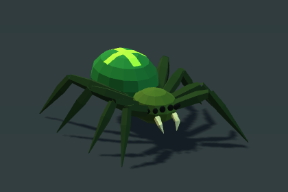
Available now
Low Poly Green Spider
One rigged creature. Procedural footsteps or six in-place FBX animations.
$9.99 USD
View Spider on Asset Store ↗See model & animations ↓Independent game assets / Unity URP
Animated creatures and modular fantasy props made while building a game. Explore the models, watch real Unity previews and find a place for them in your world.
Explore the collectionTwo creature packs available on Unity Asset Store. Dwarven Mine Kit submitted for review. Goblin Camp & Den Kit in Asset Store draft preparation.
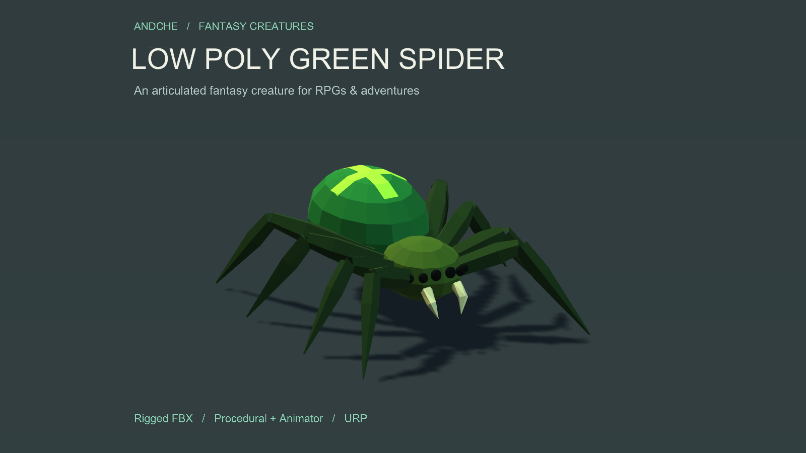
The collection

Available now
One rigged creature. Procedural footsteps or six in-place FBX animations.
$9.99 USD
View Spider on Asset Store ↗See model & animations ↓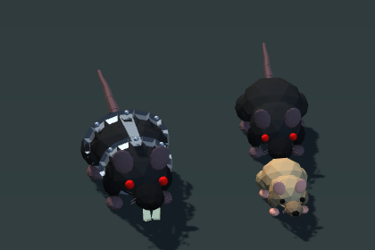
Available now
Three rat variants with procedural and Animator prefabs. Six motions per variant.
$9.99 USD · all three variants
View Rats on Asset Store ↗See models & animations ↓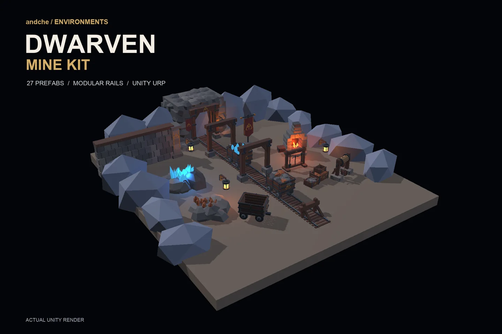
Submitted for review
27 static mining prefabs, modular rails and two demonstration scenes.
Planned price $14.99 USD
Preview the mine kit ↓Not available to purchase yet.
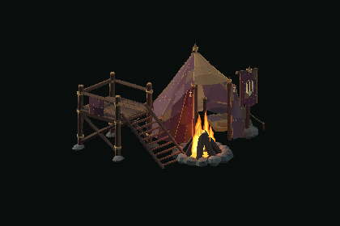
Asset Store draft
28 environment prefabs: camp props, modular den walls and five assembled room sizes. Three demo scenes.
Planned price $14.99 USD
Explore the Goblin Camp kit ↗Not available to purchase yet. No monsters or modular floors.
Prices shown in USD before taxes. Local currency, promotions and checkout prices are set by Unity Asset Store.
First creature / 001
Procedural & Animated
Available on Unity Asset Store
$9.99 USD · before taxes
Idle · Walk · Run · Attack · Hit · Death. Silent footage of the included Unity demo. Idle is a static rest hold.
Bring a distinct green spider to fantasy dungeons and adventure worlds. Eight articulated legs, a bright back marking and a readable low-poly silhouette give it character from a distance.
Choose movement-driven procedural footsteps on flat ground, with bite, hit and death reactions, or a Generic Animator prefab with six in-place FBX takes and an editable example controller.
Tested with Unity 6000.3.23f1 and URP 17.3.0. Built-in and HDRP materials are not included.
Visual asset only: connect your own movement and gameplay systems. Procedural feet use a flat reference plane. Animation clips are in-place; Idle is a static rest hold. No navigation, combat or health system, sounds, poison effects, colliders, LODs or networking is included. No uneven-terrain IK or wall/ceiling walking. Tested with upright, uniformly scaled actors; no platform-specific performance guarantees.
Actual delivered models rendered in Unity. Select an image for the full-size view.
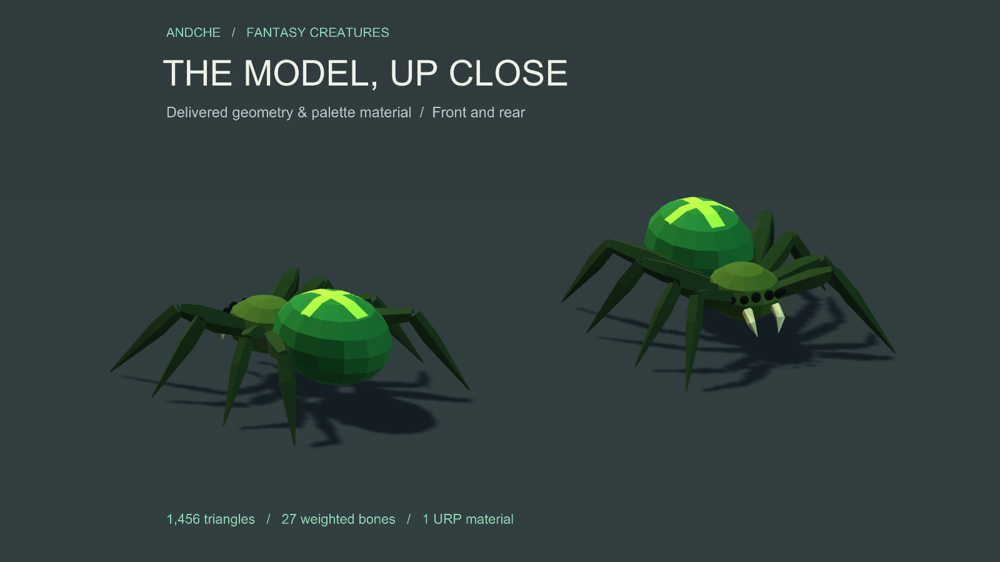
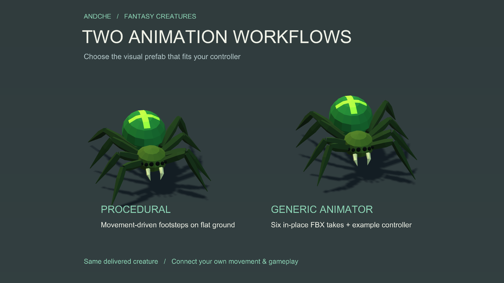
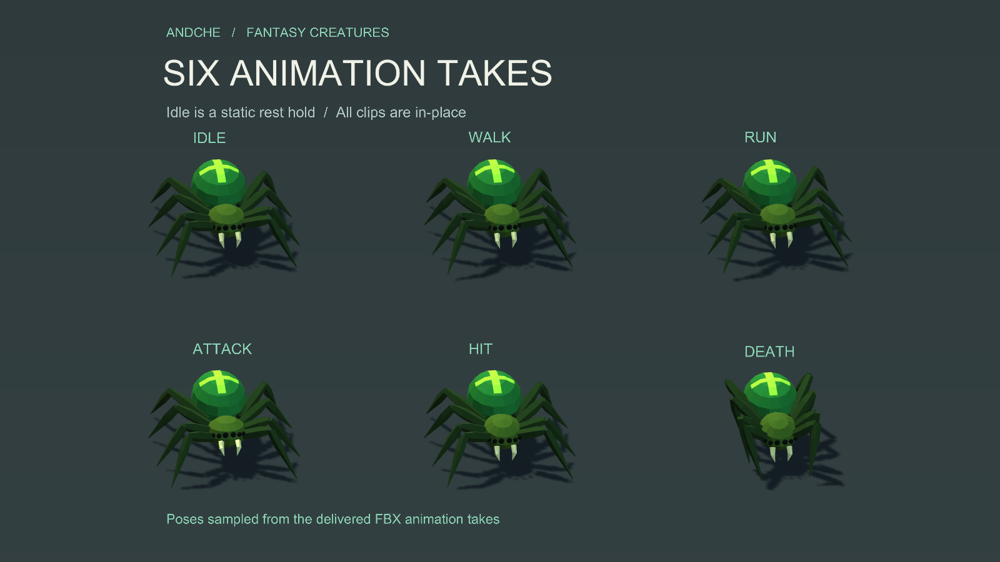
Product images show the delivered models with presentation lighting, backgrounds and cameras that are not included. The video shows the included demo. No external Asset Store package or FBX Exporter is required to use this pack.
Rat family / 002
Procedural & Animated
Available on Unity Asset Store
$9.99 USD · all three variants · before taxes
Actual Unity footage · Idle, slow walk, run, attack, hit and death. Left to right: Giant Rat, Cave Rat, Rat. Silent preview using the procedural prefabs.
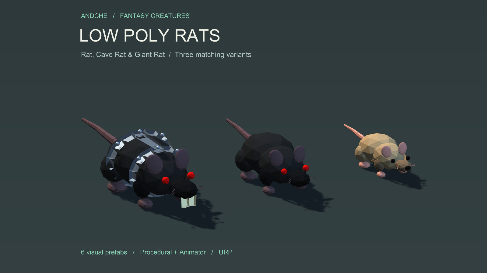
Populate dungeons, caves and adventure worlds with a matching family: the compact brown Rat, a larger dark Cave Rat with emissive red eyes, and a Giant Rat with a metal harness and oversized teeth.
Choose procedural footsteps that adapt to movement speed and turning on flat ground, with attack, hit and death reactions. Alternatively, use the Generic Animator prefabs with in-place FBX takes, editable clips and example controllers: Idle, Walk, Run, Attack, Hit and Death.
The 18 animation takes are six shared motions adapted to the three variants. An optional movement/event bridge helps connect the Animator workflow to your controller.
View Rats on Unity Asset Store ↗Tested with Unity 6000.3.23f1 and URP 17.3.0. Requires URP; Built-in and HDRP materials are not included.
Visual creature pack: connect your own controller and gameplay. Procedural feet use a flat reference plane, with no terrain raycast IK. Clips are in-place, with no dedicated backward or strafe motions. Navigation, combat, sounds, character colliders, ragdolls and LODs are not included. An eye bloom halo requires scene post-processing. Use upright, uniformly scaled actors. No networking or platform-specific performance guarantees.
Actual delivered models rendered in Unity. Select an image for the full-size view.
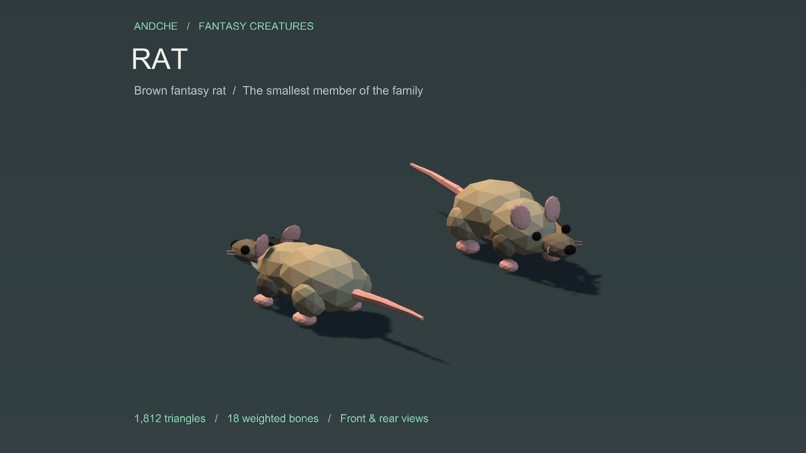
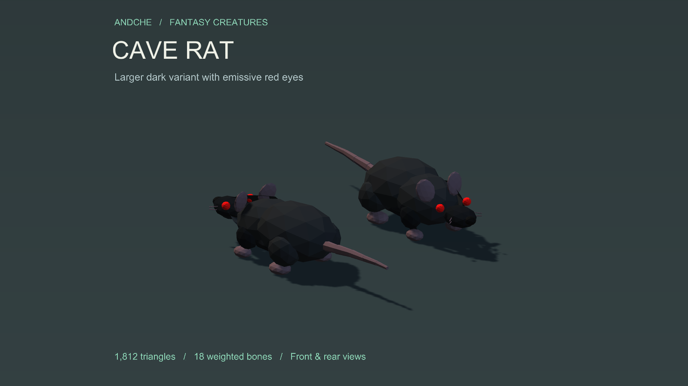
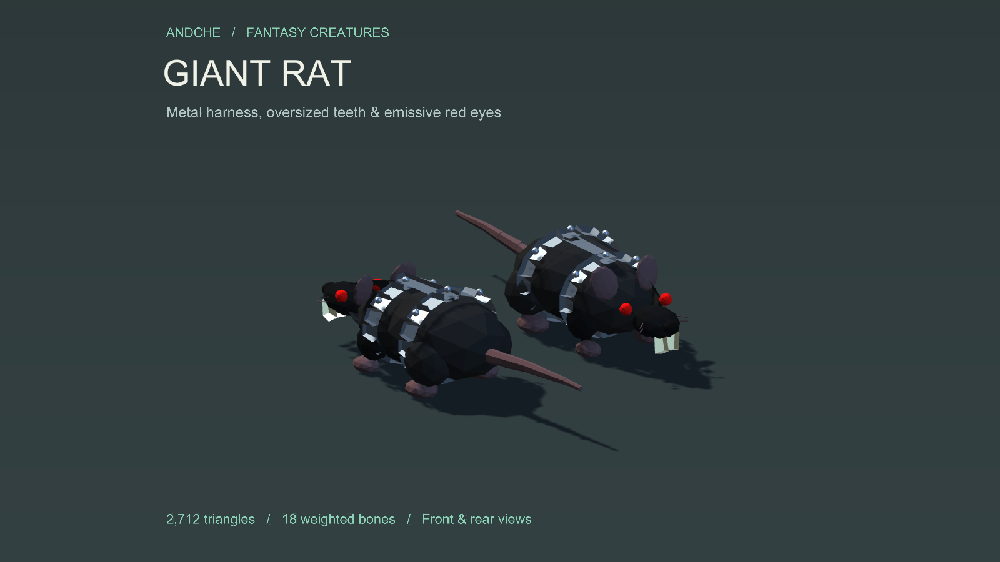
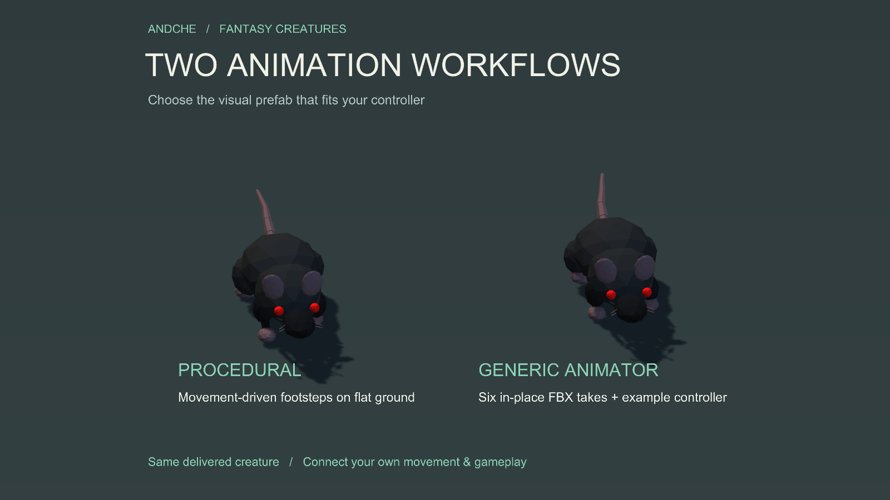
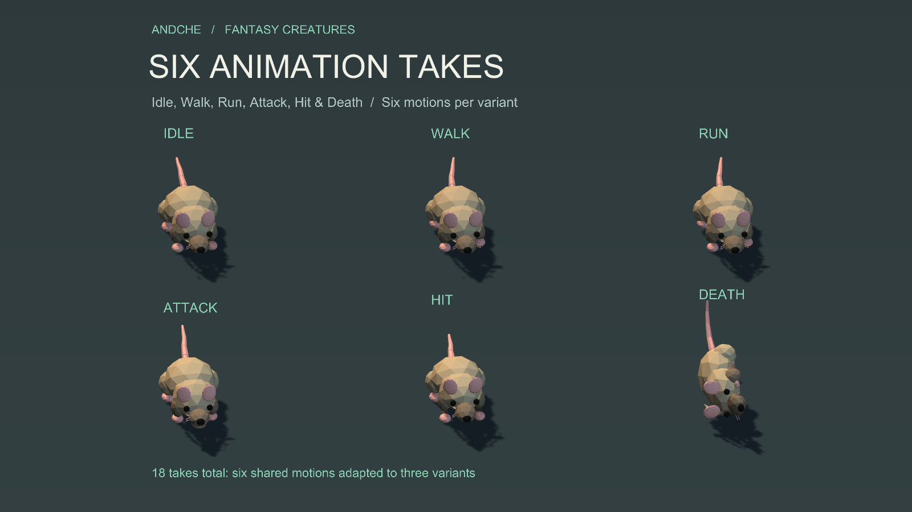
Product images show the delivered models with presentation lighting, backgrounds and cameras that are not included. The video shows the included demo. No external Asset Store package or FBX Exporter is required to use this pack.
Environment kit / 003
A worksite beneath the mountain
Submitted to Unity Asset Store for review
Planned price $14.99 USD · before taxes
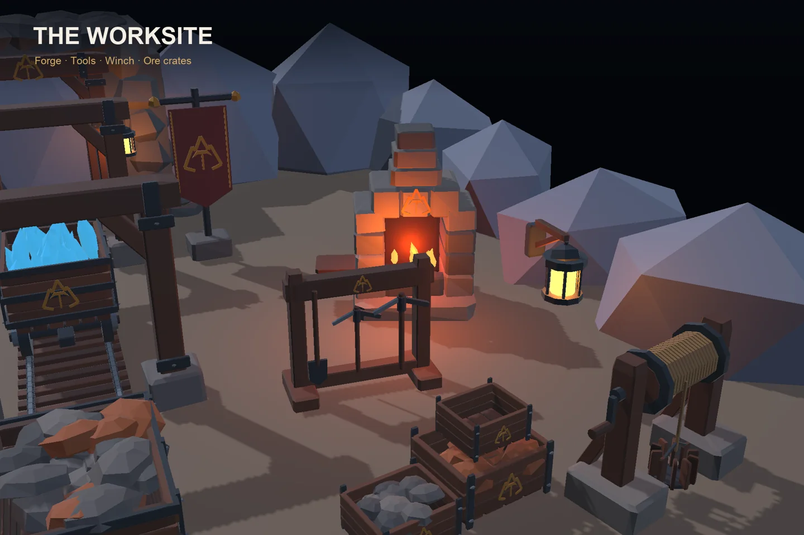
Build a stylized fantasy mine from a matching set of carts, modular rail sections, resource deposits and architectural props.
Static art package. No mining gameplay, train simulation or rail-drawing tool is included. The two mine facades are decorative, with no terrain cutting or level-transition system.
Prepared for Unity 6000.3.23f1 and URP 17.3.0. Built-in and HDRP materials are not included. Visible bloom requires camera post-processing.
Submitted to Unity Asset Store and awaiting review as of 18 October 2026. The package is not available to purchase yet; no release date is confirmed. Planned price: $14.99 USD before taxes.
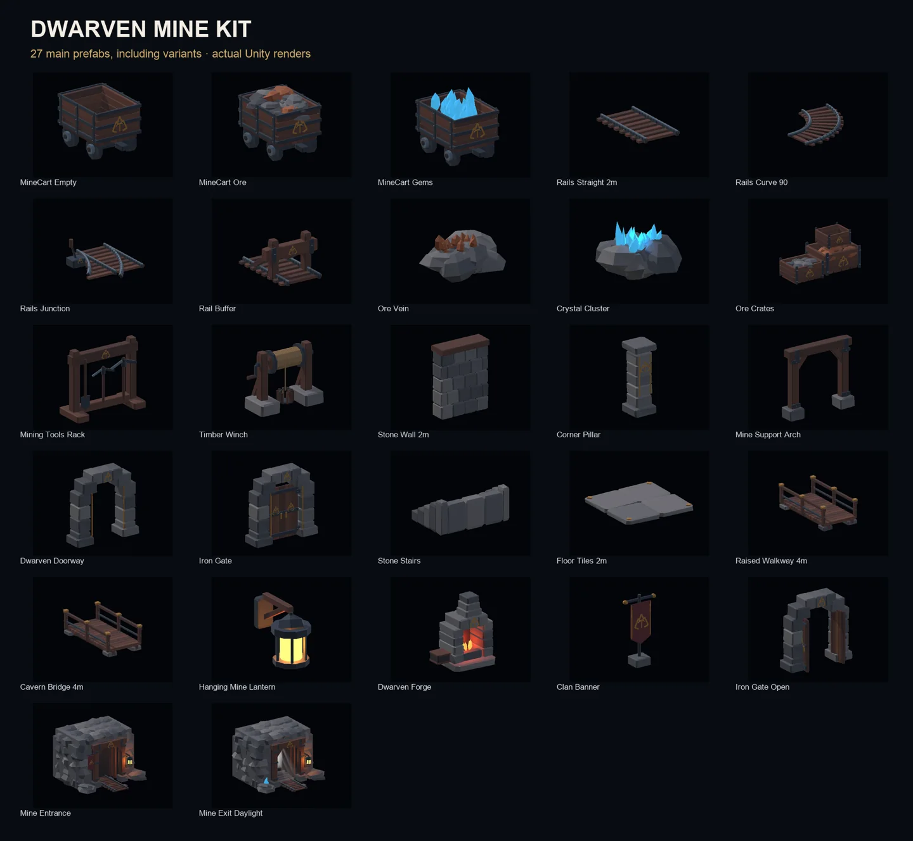
About andche
I’m building a game and sharing selected assets from that process. The focus is low-poly creatures and props for stylized worlds.
Questions about an asset? Get in touch ↗